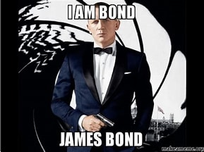

!?
James Bond, também conhecido pelo código 007, é um agente secreto fictício do serviço de espionagem britânico MI-6, criado pelo escritor Ian Fleming em 1953.
O personagem foi apresentado ao público em livros de bolso na década de 1950, com o romance Casino Royale, tornando-se um sucesso de venda e popularidade entre os britânicos e, logo a seguir, entre os países de língua inglesa. Na década seguinte, os livros viraram uma grande franquia no cinema, a mais duradora e bem sucedida financeiramente, com um total de vinte cinco filmes oficiais, começando com O Satânico Dr. No, em 1962.
O personagem já foi tema de um seriado de televisão nos Estados Unidos antes de chegar aos cinemas, e de dois filmes independentes, à parte dos feitos pela produtora oficial EON Productions, detentora dos direitos para as telas das histórias do espião, desde o acordo feito por Harry Saltzman e Albert Broccoli - produtores originais da série - com Fleming, no início da década de 1960. Hoje a produtora é dirigida pela filha e pelo enteado de Broccoli. Bond também apareceu em quadrinhos, videojogos, e se tornou alvo de muitas paródias.
Em suas aventuras originais completas, entre elas Casino Royale, Dr. No, Goldfinger e Octopussy, Bond é descrito como um homem alto, moreno, caucasiano, de olhar penetrante, viril, porte atlético e sedutor, com idade estimada entre 33 e 40 anos, apreciador de vodka-martini (Batido. Não mexido) exímio atirador com licença 00 para matar (sétimo agente desta categoria especial, daí seu código 007) e perito em artes marciais, que combatia o mal pelo mundo (muitas vezes representado pela URSS naqueles tempos de Guerra Fria), a serviço do governo de Sua Majestade, com charme, elegância e cercado de belas mulheres, sempre se apresentando com a famosa frase "Meu nome é Bond, James Bond
Intérpretes no cinema
Robert Haakon Nielsen, mais conhecido por seu nome artístico Barry Nelson foi o primeiro James Bond no telefilme Cassino Royale (Casino Royale (1954)), antes do actor Sean Connery. Ele e David Niven são os únicos intérpretes de 007 que nunca fizeram o papel em filmes produzidos pela EON Productions.
Em filmes oficiais
Os filmes de 007 foram produzidos inicialmente por Harry Saltzman e Albert Broccoli, detentores dos direitos cinematográficos de quase toda a obra já escrita por Ian Fleming e donos da produtora EON (Everything or Nothing). Em 1975, Saltzman abandonou a franquia. Desde 1995, os filmes são produzidos pela filha de Albert, Barbara Broccoli, e seu meio-irmão, Michael G. Wilson.
Em 1962, foi lançado o primeiro filme, Dr. No, com o personagem James Bond interpretado pelo então quase desconhecido ator escocês Sean Connery. O filme, feito com apenas um milhão de dólares (orçamento baixo, até para a época), estourou nas bilheteiras de todo o mundo, transformando Connery num ícone dos anos 1960, que com a sua espetacular popularidade internacional fez surgir uma nova histeria mundial vinda da terra da Beatlemania da época: a Bondmania.
Alguns dos fatores de maior empatia da série com o público, além do carisma e do charme de seu personagem principal, têm sido sem dúvida os mirabolantes vilões, os gadgets mortais e de alta tecnologia, as suas canções-tema e as suas maravilhosas bond-girls.
Daniel Craig, quando interpretou James Bond, foi bastante criticado pela imprensa e pelos fãs-clubes por ser loiro e baixo (1,78 metros)[4] para o papel, mas com o sucesso de Cassino Royale, seu trabalho passou a ter uma boa recepção.
Artefatos tecnológicos
Bond também não seria o espião invencível que é se não fossem os brinquedos tecnológicos que o acompanham desde o início, e que por tantas vezes lhe salvaram a vida, todos produzidos no laboratório de pesquisas do MI-6 pelo irascível "Q", o gênio inventor da agência de espionagem, vivido por Desmond Llewelyn. Falecido num acidente de automóvel no fim de 1999, Lewellyn foi o ator que mais participou dos filmes de James Bond: esteve em todos, à exceção do pioneiro Dr. No e de Live and Let Die (no qual e rapidamente mencionado).
Entre esses brinquedinhos tornaram-se famosos a Lotus Esprit, o carro esporte-submarino-lançador-de-mísseis de The Spy Who Loved Me; o Aston Martin DB5 com chapa blindada à prova de balas que protegia o vidro traseiro de Goldfinger; Little Nellie, o mini-helicóptero desmontável de You Only Live Twice, e até mesmo um brinquedinho não criado por "Q", mas pela NASA, o jipe lunar usado por Sean Connery em uma de suas fugas no filme Diamonds Are Forever.
As sempre inovadoras vinhetas de apresentação na abertura dos filmes onde James Bond aparece atirando na tela, criadas pelo artista gráfico Maurice Binder, tornaram-se uma atração à parte dentro do próprio filme e revolucionaram o design cinematográfico nos anos 1960 e 70.